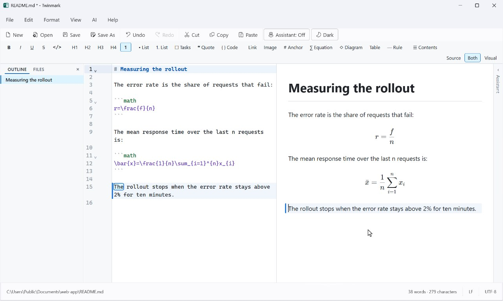
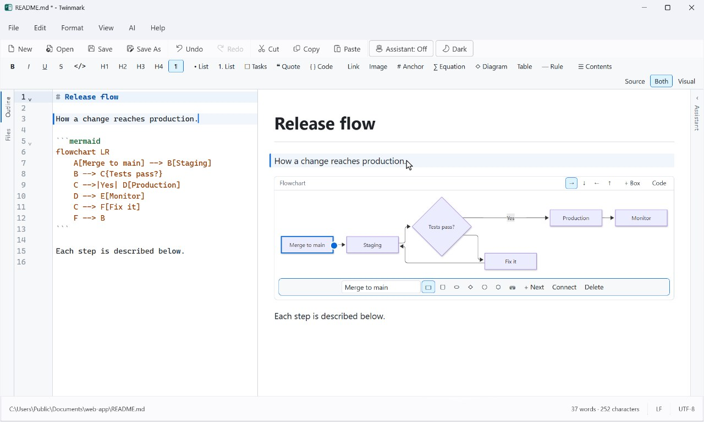
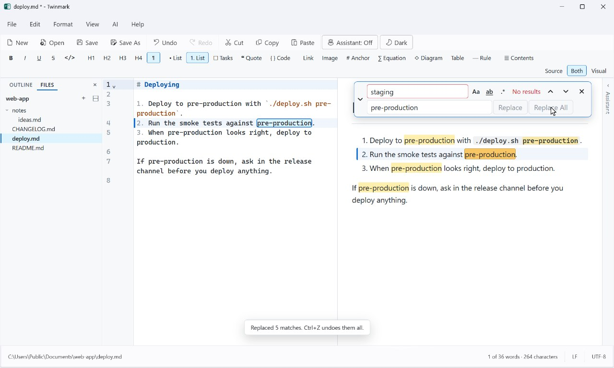

A formatting bar
Bold, italic, links and more over text you select in the visual pane.
1.1 In development · stay tuned
The next version is taking shape. Here's a first look, recorded in the version being built now: equations you type as they look, diagrams you change by clicking them, a Files panel, and find and replace in both panes.
Twinmark 1.1 isn't out yet. What's on this page is work in progress, and may change before it's released. When it's ready, it will come as an update through the Microsoft Store.
Equations
Type / for a fraction, ^ for a power, \ for any command, or pick from
135 templates and symbols. What goes in the document is LaTeX that GitLab and GitHub typeset, and an
equation you don't change is kept exactly as you wrote it.
$...$) or on a line of its own
```math blocks.Diagrams and charts
Flowcharts, sequence diagrams, pie, bar and line charts, and Gantt charts, drawn from Mermaid code as GitLab and GitHub draw them. Click a box to rename it, add the next one, or drag from its edge to connect it; charts have a form for their data. The code is written for you, one undo step at a time.

Files, and find and replace
The markdown files in your document's folder, or its whole git repository, beside the outline: open, add and rename them there. Find and replace now floats over whichever pane you're in, the visual one included.

And smaller things
Bold, italic, links and more over text you select in the visual pane.
Words beside the characters in the status bar, and the selection's.
Code in the visual pane coloured for its language, in light and dark.
The outline, Files and the assistant can go with the visual pane's own window.
It works on exactly what you select, and the visual pane's cursor shows in the source.
.mdown, .mkd and .mkdn open as easily as .md.
Stay tuned
Tell us on the Issues page: what you'd like next, or what gets in your way. Issues are public, so please don't include anything private. In the meantime, Twinmark 1.0 is in the Microsoft Store.